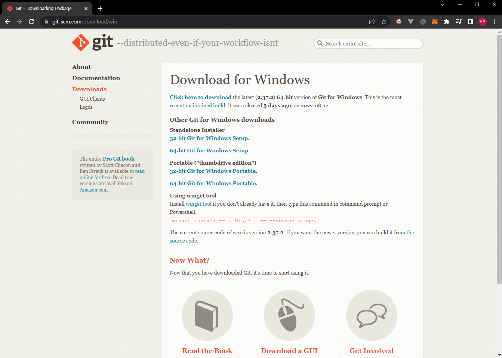

Git 웹페이지입니다.
Downloads 버튼을 클릭해 다운로드 페이지로
이동한다.
Windows 버튼을 클릭해 Windows Git 다운로드 페이지로 이동한다.

Windows의 시스템 종류에 따라 Standalone Installer 하위 파일을 받는다.
보통
64bit이다.
다운 받은 설치 파일을 사용해 아래와 같이 설치한다.
기본
설정을 그대로 사용한다.
Release Notes 체크박스는 패치 내역을 확인할 수 있으며 체크를 해제해도 무관한다.